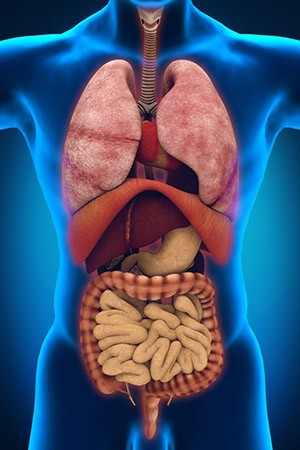

قسم الامراض الباطنية
الأمراض الباطنية الأمراض الباطنية هي أي نوعٍ أو شكلٍ من الاعتلالات أو الاضطرابات التي تصيب أجهزة أو أعضاء
الجسم الموجودة في باطن الجسم أي الجزء المخفي، وتتسبب في إعاقتها أو منعها من أداء وظائفها الحيوية، وظهور أعراضٍ
ومضاعفاتٍ متفاوتةٍ تؤثر على صحة وسلامة الإنسان وبقائه على قيد الحياة في بعض الحالات، وغالبًا ما تُصيب تلك
الاعتلالات الجهاز الهضمي وكل ما يتفرع عنه أو يتصل به. والأمراض الباطنية من أكثر الأمراض انتشارًا بين الناس
وتتعدد العيادات ويكثُر الأطباء ذوي تخصص الباطنية لعلاج أعداد المرضى الكبيرة نتيجة ما يصيب الجهاز الهضمي والكبد
والبنكرياس وغيرها من الأعضاء بالعدوى أو الالتهاب البسيط أو المزمن أو الحاد.
أشهر الأمراض الباطنية الهضمية:
-أمراض المعدة: تتمثّل تلك الأمراض بالتهاب جدار المعدة الداخليّ أو غشاء المعدة نتيجة عوامل متعددة تتسبب في
تهيُّج المعدة أو تآكل جدارها ممّا يتسبب في حدوث قرحة المعدة، ويترافق مع ذلك النزيف المعدي، والغثيان والقيء،
والآلام الحادة، وفي بعض الحالات الإسهال المزمن المؤدي إلى الجفاف.
-التهاب القولون: إصابة الجدار الداخلي للقولون والجزء الأخير من الأمعاء الغليظة بالالتهاب نتيجة العدوى
الفيروسية أو الجرثومية أو البكتيرية، وأسباب تتعلق بالعوامل العصبية، وضعف وصول الدم إلى القولون، ويترافق معه
أعراض الانتفاخ، وارتفاع درجة حرارة الجسم، والتوتر النفسي، وخروج الدم مع البراز.
-التهاب الأمعاء الدقيقة: تُشابه ظروفه وأعراضه التهاب المعدة وقرحتها.
-التهاب البلعوم: وهي الإصابات المَرضية التي تُصيب البلعوم، ويتأثر بها الفم نتيجة قربه من البلعوم، وتمتاز تلك
الالتهابات بالتسبب في فقدان الشهية، وكثرة السعال، وإيجاد صعوبة في بلع الطعام والشراب.
-حموضة المعدة: الناجمة عن زيادة حمض الهيدروكلوريك في المعدة وهو الحمض المعدي الذي يعمل على هضم الطعام وزيادته
تتسبب في تشكل جدار المعدة الداخلي، والشعور بالحرقة وامتدادها إلى المريء، وأحيانًا إلى الفم.
-القرحة الهضمية: حدوث تقرُّح في أي مكان من جدار القناة الهضمية نتيجة عدوى جرثومة المعدة واسمها هايلو كوباكتر
بايلوري.
أنواع الأمراض الباطنية الأخرى:
أمراض القلب. أمراض الجهاز التنفسي وتشمل: الربو، والدرن، وانسداد الجهاز التنفسي، والخراج الرئوي، وسرطان الرئة.
أمراض الكلى والمسالك البولية كالتهابات المثانة والكلى والحالبيّن، وهبوط الكلى.
أمراض الجهاز المناعي كالذئبة الحمراء، ونقص المناعة المكتسب. أمراض الأوعية الدموية.
أمراض الاضطرابات الأيضية أي الناجمة عن خلل في التمثيل الغذائي في الجسم ومنها: داء السكري، واضطرابات الغدة
الدرقية، واضطرابات الدهون والسمنة المفرطة.
اضطرابات الغدد الصماء. التهابات المفاصل وآلامها.
أمراض الدم كأنيميا البحر الأبيض المتوسط، والأنيميا المنجلية، وارتفاع ضغط الدم.
أمراض الجهاز العصبي المركزي كالتهاب السحايا، والتهاب الدماغ، والشلل الدماغي، والسكتة الدماغية.